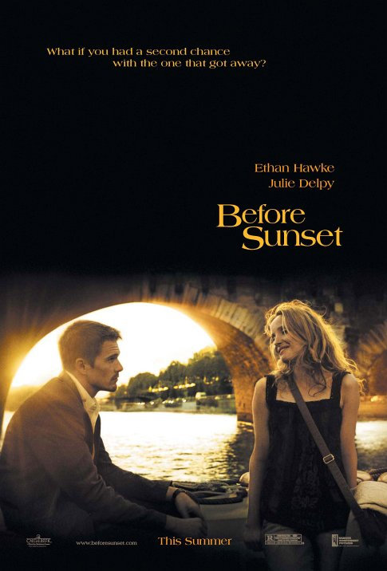

Merhaba. Ben Betül AKSU. Web geliştirme ile ilgileniyorum. Kodluyoruz'un bu eğitimi sayesinde bilgilerimi pekiştiriyorum ve tazeliyorum.
Celine and Jesse, who met nine years ago in Vienna, cross paths again for a single day in Paris. Together, they try to find out what might have happened if they had acted on their feelings back then.
Ismael (Louis Garrel) and Julie (Ludivine Sagnier) lead a blissfully romantic existence in Paris and are as likely to sing their thoughts as speak them. They meet a variety of equally passionate young people as they wander through the dream-like city.